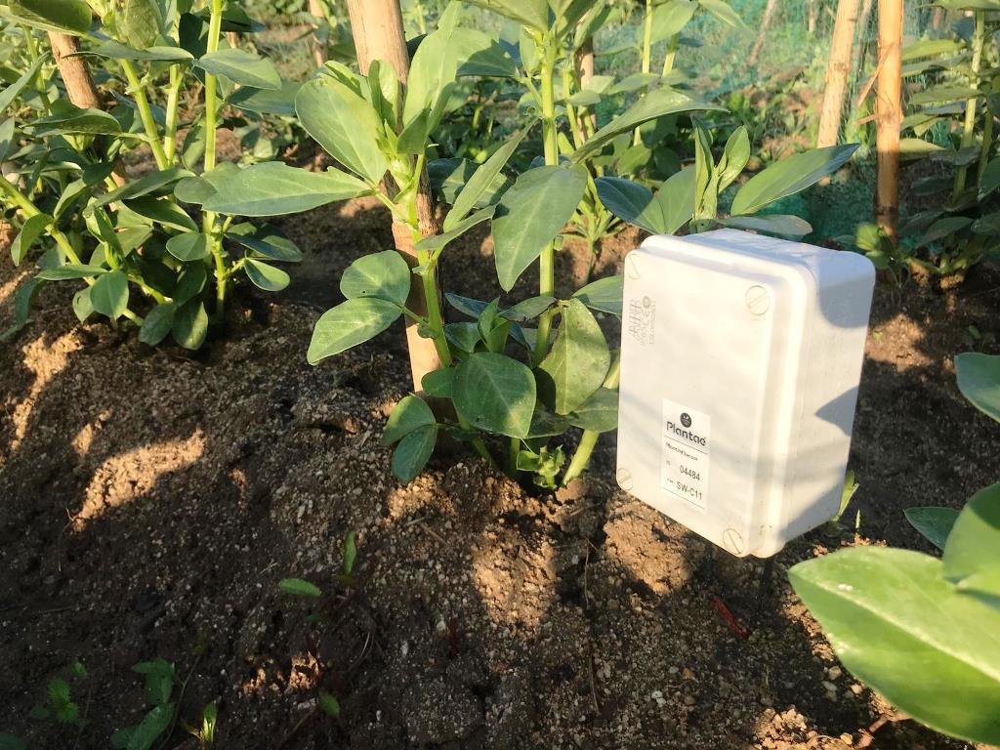
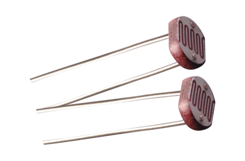
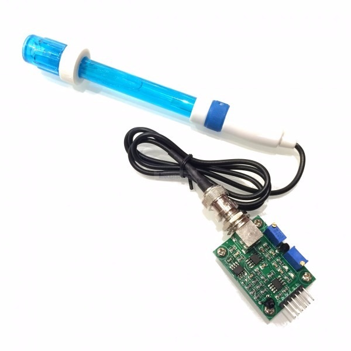
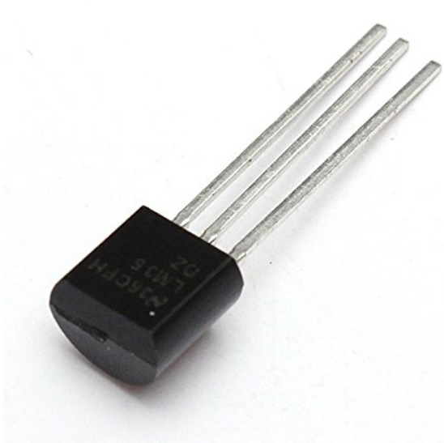
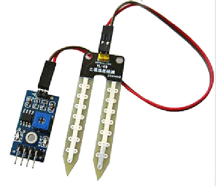

Nuestro sistema de monitorización almacena los sensores necesarios en una caja de alta resistencia
ante todas las condiciones medioambientales.
En la caja podrás encontrar sensores de humedad, temperatura, luminosidad, salinidad y de nivel pH.

Sensor de luminosidad
Un sensor de luz es un dispositivo con la capacidad
de detectar la cantidad de luz presente en su entorno.
Cuando la luz contacta con el sensor, genera una pequeña
corriente eléctrica. Cuanta más luz haya, mayor será la
corriente generada.

Sensor de pH
Un sensor de pH es un dispositivo utilizado para medir
la acidez de un sustancia líquida. Detecta los cambios de
en el nivel y lo convierte en una lectura, lo cual nos
permite controlar el pH en diferentes entornos.

Sensor de temperatura
Un sensor de temperatura es un dispositivo para
medir la temperatura de su entorno. Se generan corrientes
electricas con los cambios de temperatura que se utilizan
para monitorizar.

Sensor de salinidad
El sensor de salinidad es un dispositivo utilizado
para medir la cantidad de sal disuelta en un
líquido. Permitiendo detectar el valor de salinidad
basado en las corrientes que genera según cambia.

Sensor de humedad
El sensor de humedad se utiliza para medir la
cantidad de humedad o vapor de agua presente en el aire
o en un objeto. Los cambios en las medidas se convierten
en corrientes que podemos usar para controlar y monitorizar
la humedad de diversos entornos.
Con nuestra web tienes acceso a todos los datos de los sensores en tu huerto, para que el control y
monitorización de este sea lo más práctico posible.
Además podrás controlar varios huertos desde una misma web alternando fácilmente entre gráficas.